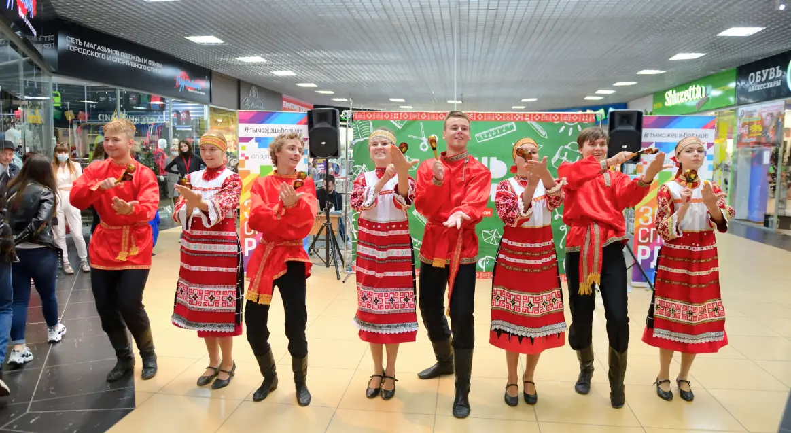

- О нас
- События
- Галерея
- Аренда
- Карта ТЦ
- Контакты
- Вакансии
- Тендеры
Главная > Аренда

Аренда в ТУЦ “Сарафан”
Торговый центр «Сарафан», расположенный по адресу: г. Тула, ул. Путейская, д.5 (Площадь Московского вокзала), предлагает помещения в аренду от собственника от 25 до 1000 кв. м.
Скачать презентациюПреимущества аренды в нашем торговом центре:
- ТЦ «Сарафан» находится в 5 минутах езды от центра города на площади Московского вокзала на одной из самых оживленных улиц города – Красноармейский проспект.
- Рядом жилой массив, пересечение основных транспортных и пешеходных потоков –конечная остановка общественного транспорта, железнодорожный вокзал.
- На территории ТЦ «Сарафан» есть бесплатная парковка для клиентов, более 500 машиномест, удобный подъезд.
- Ежедневно наш ТЦ посещает порядка 10 000 тысяч человек различной целевой аудитории
- Демократичные цены за аренду площади
- У нас Вы можете арендовать площадь под магазины белья, одежды и обуви, салоны, точки общепита и др.
Открытие торговой точки в одном из оживленных мест города обеспечит доходность, развитие и процветание Вашего бизнеса.
Более 130 бутиков и магазинов уже арендуют у нас помещения


- Якорные арендаторы - Лента, Детский Мир, Технопарк, Модис, Familia, Читай город, Тутанхамон, Л'Этуаль
- Бренды - EWA, Artigli, Gerzedo, Goergo, Du monde, Petek, Neri Karra, Ledy Collection, Paolo Conte, P'Cont, VINZER, Ace, Tonnelli, Milavitsa, и др.
- Магазины спортивной одежды и инвентаря: Адреналин, Спорт Лайн
- Зона фудкорта - Burger King, Империя вкуса, Про Кофий, Добрая сдоба
- Салоны связи: Билайн, Мегафон, YOTA, Связной, Теле2
- Зоосад, аптека «Здесь аптека», «Арт-оптика», Fresh Оптика, ковры, салоны штор, текстиль Missis Hatson и Home TEX, салон Арт-Самовар, посуда, подарки, картины, сувениры и другие.
- Общая площадь торгового центра
- 25 816 м 2
- Площадь, сдаваемая в аренду
- 16 675 м2
- Парковка (машиномест)
- 500
- Посещаемость (в неделю)
- 100 000 чел